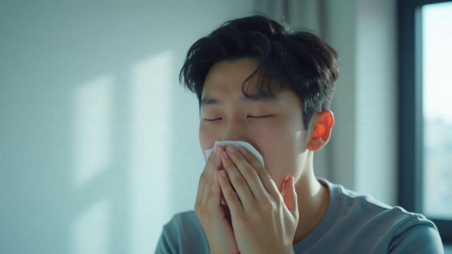
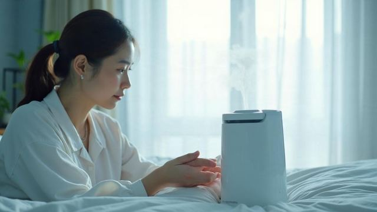
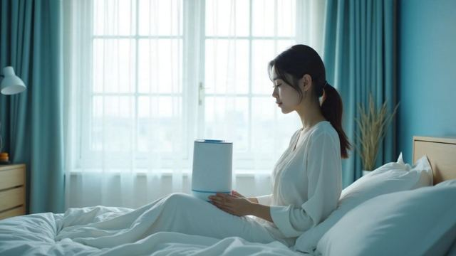
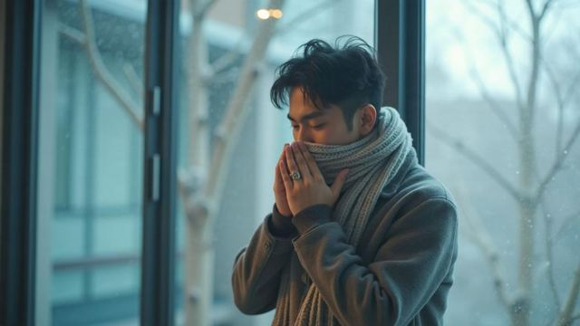
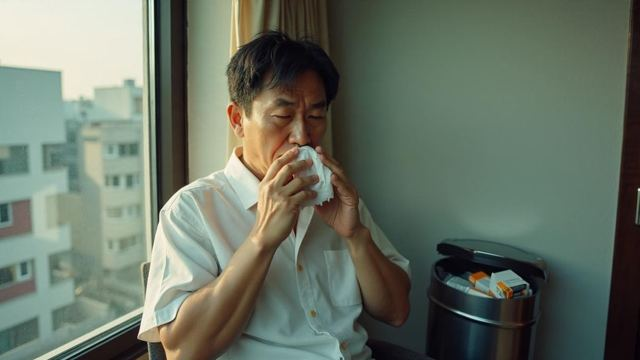
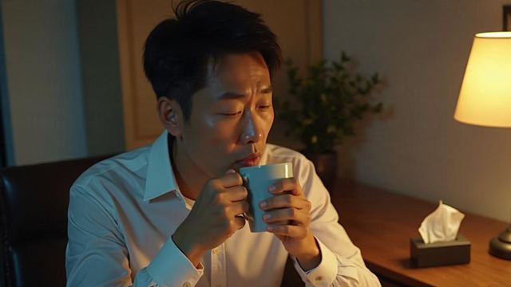
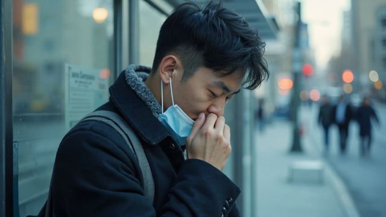
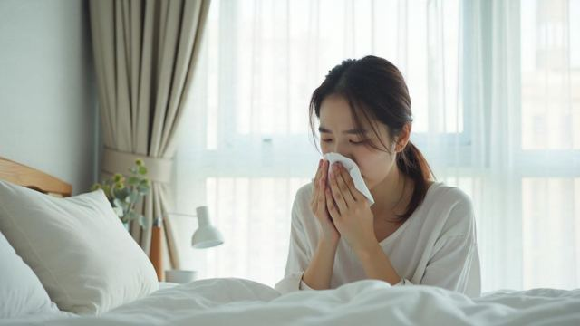
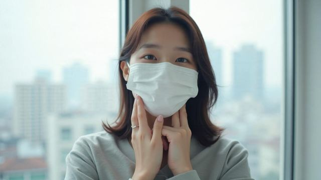

아침마다 나오는 재채기와 콧물, 오래가는 기침, 마른 목과 쉰 목소리처럼 코와 목의 불편은 계절과 공기, 잠과 생활 습관에 따라 달라집니다. 좋은꿈참사랑한의원 노량진점은 한방안·이비인후·피부과 진료과목에서 증상이 나타나는 때와 생활 환경을 먼저 여쭙고, 다른 검사가 먼저 필요한 신호는 따로 안내합니다.
비염·호흡기, 쉬운 말로 하면
코와 목, 기관지는 바깥 공기를 처음 만나는 길입니다. 찬 공기, 건조한 실내, 미세먼지, 피로가 겹치면 같은 사람도 계절마다 불편이 달라질 수 있어 증상과 함께 언제, 어디서 심해지는지를 살핍니다.
자주 듣는 이야기
- 아침에 일어나면 재채기와 맑은 콧물이 쏟아진다
- 감기는 나았는데 기침이 몇 주째 남아 있다
- 입을 벌리고 자서 아침마다 목이 마른다
- 미세먼지 많은 날 목이 칼칼하고 기침이 난다
- 목 뒤로 무언가 넘어가는 느낌에 헛기침을 자주 한다
- 말을 많이 하는 일을 해서 목이 자주 쉰다
먼저 이렇게 여쭙니다
- 증상이 시작된 시기와 심해지는 시간대·계절
- 잠자는 방의 온도와 습도, 코골이와 입을 벌리고 자는지
- 흡연 여부와 일하며 목을 쓰는 정도
- 열, 가래의 색, 숨찬 정도
- 복용 중인 약과 그동안 받은 검사
일상에서 먼저 해 볼 수 있는 것
- 실내 습도를 적당히 유지하고 자기 전 따뜻한 물 마시기
- 미세먼지 많은 날은 외출 뒤 손과 얼굴 씻기
- 찬 공기를 갑자기 들이마시지 않도록 목도리나 마스크 쓰기
- 목을 많이 쓴 날은 말하는 시간을 줄이고 쉬기
- 증상이 심한 날의 날씨와 장소를 적어 두기
한의원에서 함께 살필 수 있는 경우
검사에서 큰 이상은 없다고 들었지만 코와 목의 불편이 계절마다 반복되는 경우, 감기 뒤 기침이 오래 남는 경우, 잠과 피로가 함께 흔들리는 경우에 몸의 온기와 잠, 소화를 함께 살핍니다.
진찰 후 필요하다고 판단될 때 침, 온열, 한약 상담 등을 상태에 맞게 이어서 씁니다. 쓰고 있는 흡입기나 알레르기약은 처방한 의사와 상의 없이 줄이거나 끊지 않습니다.
먼저 내과·이비인후과 확인이 필요한 신호
아래와 같은 경우는 내과, 이비인후과, 응급실 진료를 먼저 받으세요.
- 숨이 차거나 쌕쌕거리는 소리가 날 때
- 높은 열이 며칠째 이어질 때
- 가래나 콧물에 피가 섞여 나올 때
- 기침이 3주 넘게 이어지거나 체중이 함께 줄 때
- 가슴이 아프거나 답답할 때
- 쉰 목소리가 2주 넘게 이어질 때
계절별로 살피는 점
코와 목의 불편은 계절이 바뀔 때 함께 바뀌는 경우가 많습니다. 지난해 같은 계절에 어땠는지 기억해 두면 상담에 참고가 됩니다.
- 봄: 꽃가루와 황사가 많은 날은 외출 뒤 손과 얼굴 씻기
- 여름: 냉방으로 차가워진 실내와 바깥의 온도 차 줄이기
- 가을: 아침저녁 기온 차가 커지는 때 목을 따뜻하게 하기
- 겨울: 난방으로 건조해진 실내 습도 챙기기
노량진점 진료는 이렇게 진행됩니다
접수 뒤 상담에서 증상이 심해지는 때와 생활 환경을 먼저 듣고, 필요하다고 판단될 때 진찰합니다. 다시 오시면 지난번 이야기부터 이어서 여쭙습니다. 열이 나거나 감기 기운이 있을 때는 방문 전에 전화로 알려 주세요.
상도동·노량진에서
노량진 학원가와 사무실처럼 실내에 오래 머무르며 말을 많이 하는 분, 지하철 7호선과 1·9호선으로 출퇴근하며 찬 공기와 미세먼지를 자주 만나는 분이 많은 동네입니다. 노량진점은 상도역 3번 출구에서 약 200m 거리에 있고, 노량진역 3번 출구 쪽 정류장에서는 마을버스 동작01번으로 오실 수 있습니다.
자주 묻는 질문
아침마다 콧물과 재채기가 나는데 한의원에서 상담할 수 있나요?
네. 증상이 심한 시간대와 계절, 잠자는 환경을 먼저 여쭙고 몸의 온기와 잠을 함께 살핍니다. 한쪽 코만 계속 막히거나 코피가 잦으면 이비인후과 확인을 먼저 권합니다.
감기는 나았는데 기침이 계속되면 어떻게 하나요?
기침이 시작된 때와 가래, 밤에 심해지는지를 여쭙습니다. 3주 넘게 이어지거나 숨이 차면 내과 진료를 먼저 받으세요.
미세먼지 많은 날 목이 아플 때는 어떻게 하면 좋을까요?
외출을 줄이고 마스크를 쓰며, 돌아와서 손과 얼굴을 씻고 물을 자주 마셔 보세요. 숨이 차거나 열이 나면 내과 진료가 먼저입니다.
목소리를 많이 쓰는 직업인데 자주 쉬어요.
말하는 시간, 물 마시는 습관, 잠, 역류 증상을 함께 살핍니다. 쉰 목소리가 2주 넘게 이어지면 이비인후과 진료를 권합니다.
입을 벌리고 자서 아침마다 목이 마른 건 왜 그런가요?
코가 막히거나 자는 자세 때문일 수 있어 코골이와 잠의 질을 함께 여쭙습니다. 자다가 숨이 멈춘다는 말을 들었다면 수면 검사가 필요한지 확인해 보세요.
아이 비염도 상담하나요?
네, 한방소아과 진료과목에서 함께 봅니다. 아이의 잠, 식사, 감기 횟수를 여쭙고, 숨이 차거나 고열이 있으면 소아청소년과 진료를 먼저 권합니다.
담배를 끊었는데 아침 가래가 계속돼요.
금연한 시기와 가래의 양·색, 숨찬 정도를 여쭙습니다. 가래에 피가 섞이거나 체중이 줄면 내과 진료를 먼저 받으세요.
흡입기나 알레르기약을 쓰고 있어도 한의원 진료를 받을 수 있나요?
네. 쓰고 있는 약의 이름과 쓰는 방법을 알려 주세요. 약은 처방한 의사와 상의 없이 줄이거나 끊지 않습니다.
감수: 좋은꿈참사랑한의원 노량진점 대표원장 이종호 · 마지막 확인 2026-11-24 · 일반적인 건강 정보이며 진단·치료를 대신하지 않습니다.
비염·호흡기 글 모아 보기 (15편)

임용시험 수업 실연을 연습하다 목이 자주 잠길 때는 어떻게 하나요?
수업 실연과 면접 연습으로 하루에도 여러 번 큰 소리로 말하면 목이 잠기고 칼칼해지기 쉬워, 연습 시간과 말하는 방식, 물 마시는 습관을 먼저 묻고 목을 아끼며 연습하는 방법을 함께 찾습니다.
수정 2026-11-24

환절기 아침에 공원을 걷고 나면 재채기와 맑은 콧물이 쏟아질 때는 어떻게 살피나요?
환절기 찬 공기나 꽃가루, 미세먼지가 많은 날 아침 산책 뒤 재채기와 맑은 콧물이 이어지는 경우가 있어, 증상이 나타나는 날씨와 시간, 집 안 환경을 먼저 묻고 산책 시간과 준비를 함께 조정합니다.
수정 2026-11-24

노량진 학원 강의실 냉난방 속에서 목이 칼칼하고 코가 마를 때는 어떻게 하나요?
하루 종일 냉난방이 켜진 강의실에 앉아 있으면 공기가 건조해져 목이 칼칼하고 코가 마르기 쉬워, 앉는 자리와 물 마시는 습관, 잠자리 습도를 먼저 묻고 생활 속에서 목과 코를 지키는 방법을 함께 찾습니다.
수정 2026-11-24
혼자 사는 수험생이 감기에 걸렸을 때 공부와 쉬기는 어떻게 정하나요?
혼자 지내며 감기에 걸리면 끼니와 물을 챙기기 어렵고 무리해서 공부를 이어가기 쉬워, 열과 기침, 식사 상태를 먼저 확인하고 쉬어야 할 때와 진료가 필요한 때를 함께 정리합니다.
수정 2026-11-24

환절기에 목이 건조하고 칼칼할 때는 어떻게 관리하나요?
환절기에 목이 건조하고 칼칼한 것은 실내 건조와 먼지, 수분 부족과 관련된 경우가 많아 실내 습도와 수분 섭취를 점검하고 기침과 열, 삼킴 곤란이 있거나 2주 넘게 이어지면 병원 진료를 권합니다.
수정 2026-11-24
강의를 많이 해서 목소리가 자주 쉬는 분은 어떻게 관리하면 좋을까요?
강사, 교사, 상담직처럼 목소리를 많이 쓰는 분들의 쉰 목소리는 말하는 시간, 물 마시는 습관, 잠, 역류 증상을 먼저 묻고 목을 쉬게 하는 방법을 함께 정리합니다. 2주 넘게 이어지면 이비인후과 진료를 권합니다.
수정 2026-11-23
코가 막힌 것인지 콧물이 목으로 넘어가는 것인지 어떻게 구분해 말하나요?
숨이 코로 잘 안 통하는 느낌인지, 목 뒤로 무언가 넘어가 헛기침이 나는 느낌인지 나눠 말씀해 주시면 생활 환경과 잠 중 어느 쪽을 먼저 살펴볼지 정하기 쉽습니다.
수정 2026-11-23

담배를 끊으려는데 아침마다 가래가 끓을 때는 어떻게 살피나요?
흡연 중이거나 금연을 시작한 뒤 아침 가래와 기침은 흔히 이야기되는 불편이라, 흡연량과 기간, 가래 모양, 숨찬 정도를 먼저 묻고 금연을 이어갈 수 있게 생활 습관을 함께 정리합니다.
수정 2026-11-23

목 뒤로 콧물이 넘어가서 자꾸 헛기침을 하게 될 때는 어떻게 살피나요?
목 뒤로 콧물이 넘어가는 느낌과 잦은 헛기침은 비염, 부비동 상태, 건조한 실내, 역류와 관련이 있을 수 있어 증상이 심한 시간과 콧물 색, 함께 오는 증상을 먼저 묻습니다.
수정 2026-11-23

감기는 나았는데 기침만 몇 주째 남아 있을 때는 어떻게 살피나요?
감기 뒤 기침이 몇 주 이어지는 경우가 있어, 기침이 심한 시간대와 가래, 목의 간질거림, 잠과 실내 환경을 먼저 묻고, 3주 넘게 이어지거나 숨이 차면 검사를 권합니다.
수정 2026-11-23
자고 일어나면 입이 바짝 마르고 목이 칼칼할 때는 어떻게 살피나요?
아침마다 입이 마르고 목이 칼칼한 것은 코막힘으로 입을 벌리고 자거나, 실내가 건조하거나, 코골이와 관련이 있을 수 있어 잠자는 모습과 코 상태를 먼저 묻습니다.
수정 2026-11-23

아침에 일어나자마자 재채기와 맑은 콧물이 쏟아질 때는 어떻게 살피나요?
아침 재채기와 맑은 콧물은 침실의 먼지, 온도 차, 건조함과 관련이 있을 수 있어 침구 관리와 실내 환경, 증상이 심한 계절을 먼저 묻고 생활 속 관리 방법을 함께 정리합니다.
수정 2026-11-23

미세먼지 많은 날 목이 따갑고 기침이 날 때는 어떻게 지내면 좋을까요?
미세먼지가 심한 날 목이 따갑고 기침이 나는 경우 외출 시간과 마스크 착용, 실내 환기 방법, 물 마시는 양을 함께 점검하고, 숨이 차면 바로 진료를 받도록 안내합니다.
수정 2026-11-23
마른기침과 가래 섞인 기침은 어떻게 구분해서 기록하나요?
기침할 때 가래가 나오는지, 목이 간질간질해서 나는지, 언제 심해지는지를 나눠 적어 오시면 어떤 확인이 먼저 필요한지 판단하는 데 도움이 됩니다.
수정 2026-11-23
겨울 출근길 찬 공기를 마시면 기침이 터질 때는 어떻게 살피나요?
찬 공기를 마시면 기침이 나는 것은 기도가 예민한 상태일 수 있어, 기침이 나는 상황과 쌕쌕거림 여부, 운동할 때 숨찬 정도를 먼저 묻고 필요한 검사를 안내합니다.
수정 2026-11-23